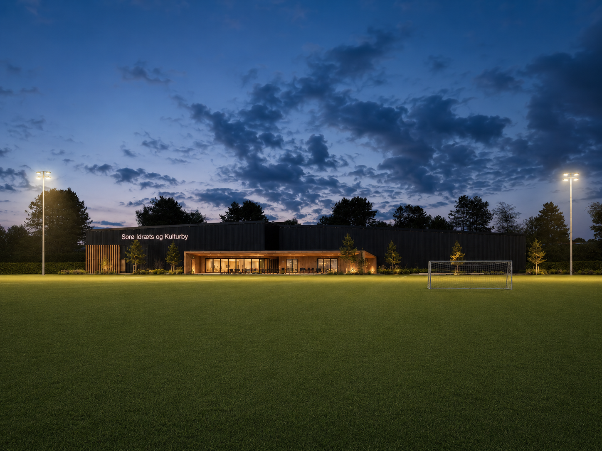

Behovet er dokumenteret, og viljen er fælles: frivillige, sportsklubber, politikere og Sorø Kommune står sammen om at give byen et løft.
Behovene er samlet gennem dialog med foreninger, forældre, seniorer og kommunen. Hvert behov besvares af en konkret del af projektet, og løsningerne udvikler vi sammen.
I dag: Få tilbud til seniorer, mens hallerne står tomme i dagtimerne.
Projektet: Faste senioraktiviteter i sportshal, multihal og kulturhus, midt på dagen.
I dag: Ingen samlet ramme for dans i bydelen.
Projektet: Multihal og bevægelsessale, der gør det muligt at oprette danseaktiviteter.
I dag: Fitness kræver kommercielt medlemskab.
Projektet: Fælles foreningsfitness til foreningspris, åben for alle medlemmer.
I dag: Intet naturligt mødested for foreninger og borgere på tværs.
Projektet: Klub- og kulturhus som byens fælles stue.
I dag: Unge uden holdsport mangler steder at være aktive efter skole.
Projektet: Multilinje-sport og åbne aktiviteter i hverdagene.
I dag: Faciliteterne er ikke fulgt med bydelens vækst.
Projektet: Nye kvadratmeter til idræt og kultur, bygget til fremtiden.
Idræts- og kulturbyen er ikke foreningens projekt alene. Det er et partnerskab, hvor alle parter bidrager med det, de er bedst til.
Driver projektet, samler behovene og lægger de mange frivillige timer, der gør en idræts- og kulturby mulig som non-profit.
Sammen med politikerne arbejder vi på rammerne: lokalplan, samarbejdsmodel og en fælles ambition om bedre faciliteter til borgerne.
Byens klubber og foreninger er med som interessenter fra start, så faciliteterne bygges til det virkelige foreningsliv.

To haller og et klub- og kulturhus, tegnet og prissat. Se visualiseringerne og faciliteterne.
Se faciliteterne